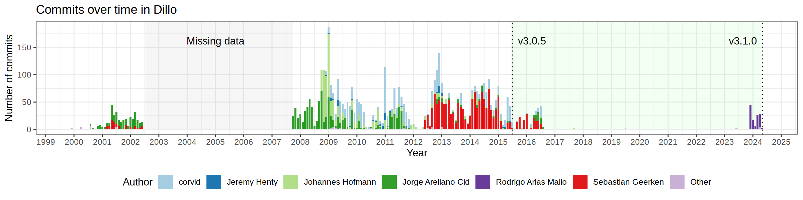

Dillo release 3.1.0
Released on 2024-05-04Summary of changes
Since the last release 3.0.5 from 2015 a lot of things have happened to the Dillo project.  Here is a short timeline to put things into perspective:
{kind=link}
- On 2016, the main developer of the layout engine, Sebastian Geerken, passed away.
- On 2017, the development stopped.
- On 2019, the last email from Jorge Arellano Cid, the lead developer of Dillo, was recorded by the mailing list.
- On 2022, the domain
dillo.orgwas lost. - On 2024, an attempt to resurrect the project began by Rodrigo Arias Mallo.
This release contains a lot of changes accumulated from the 2015-2017 period, as well as fixes and small features introduced in 2024. Here is a summary:
- Add support for floating HTML elements, which involved a big redesign.
- Add support for OpenSSL, LibreSSL and mbed TLS for HTTPS, which is now enabled by default.
- Add a CI pipeline to build Dillo on Ubuntu, MacOS, FreeBSD and Windows (via cygwin).
- Add automatic HTML rendering tests.
- Improve and extend the Dillo manual.
In memory of Sebastian Geerken.
Download
To download the 3.1.0 release, get it from the GitHub release page or directly from the links below:- dillo-3.1.0.tar.bz2 (972K) (signature)
- dillo-3.1.0.tar.gz (1.2M) (signature)
- dillo-3.1.0.zip (1.4M) (signature)
Detailed changes
This is the list of changes from the ChangeLog of this release:- Patches by Sebastian Geerken:
- Floating elements.
- Redesign of widget sizes ("GROWS").
- Applied CSS attribute 'width' to all elements, 'height' is now also supported.
- Suport for 'min-width', 'max-width', 'min-height' and 'max-height'.
- Suport for 'display: inline-block'.
- <BUTTON>'s are now inline.
- Image aspect ratio is preserved when one dimension is specified by a percentage value.
- New dillorc options 'adjust_min_width' and 'adjust_table_min_width'.
- Make building of test/ files more robust.
- Work on collapsing spaces: more cases supported.
- Fix crash that's possible searching for text while page still being built.
- Patches by corvid:
- HTML5 character references.
- Give images lower priority when requesting resources (responsiveness).
- Reuse of connections for HTTP (disable w/ http_persistent_conns in dillorc).
- Abort failed queries.
- HTTP Strict Transport Security (disable with http_strict_transport_security preference in dillorc).
- Fix bug when closing popup using window manager (bug introduced in 3.0.3).
- Block mixed content.
- Improve cookies date recognition.
- Use Mbed TLS
- Iterate through the IP addrs for a host when trying to connect().
- Patches by Jeremy Henty:
- Doxygen fixes.
- Patches by corvid and Benjamin Johnson:
- Move HTTPS from dpi into the browser, enable SNI, check more locations for CA bundles and add --with-ca-certs-file and --with-ca-certs-dir to configure, some improvement to security warning popups, etc.
- Patches by Johannes Hofmann:
- Fix bookmarks DPI crash.
- Fix OSX compilation issue with xembed.
- Patches by Rodrigo Arias Mallo <rodarima@gmail.com>:
- Fix DuckDuckGo search links
- Add scroll_step option to control the mouse wheel vertical step
- Add support for OpenSSL 1.1, OpenSSL 3, mbedTLS 2 and mbedTLS 3
- Replace configure flag --enable-ssl to --enable-tls
- Enable TLS support by default for https.
- Add automatic rendering tests (only enabled with --enable-html-tests).
- Fix width calculation when using 'min-width' and 'max-width'.
- Update website URL to https://dillo-browser.github.io/
- Add ui_tab_height option to control the tab height. Default value increased from 16 to 20 pixels to improve usability.
- Switch tabs using the mouse wheel by default. Use the new option scroll_switches_tabs to disable the behavior.
- Fix OpenSSL handling of unexpected EOF without close notify alert.
- Expand home tilde '~' in the file plugin.
- Ignore width attribute with relative values for td and th elements.
- Enable Doxygen for C files and use Awesome Doxygen theme.
- Fix DPIs extension (.dpi.exe) in Windows systems via Cygwin.
- Add support for the <main> HTML tag.
- Fix W3C validator and remove broken WDG validator.
- Simplify bookmark DPI page style and improve readability.
- Improve the Dillo manual available from the help button.
- Improve detection of XHTML documents.
- Install desktop file with Dillo icon.
- Add version in user manual and about:splash.
- Patches by Mark Walker:
- Add http_force_https mode.